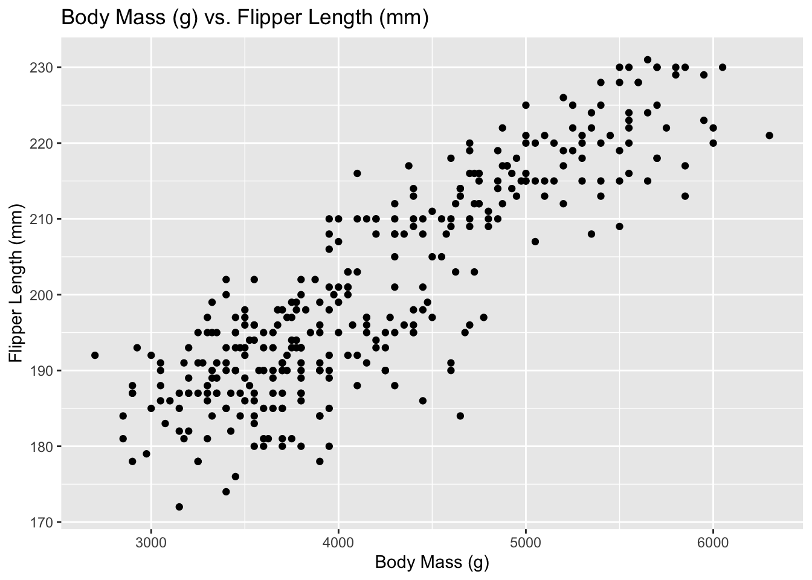
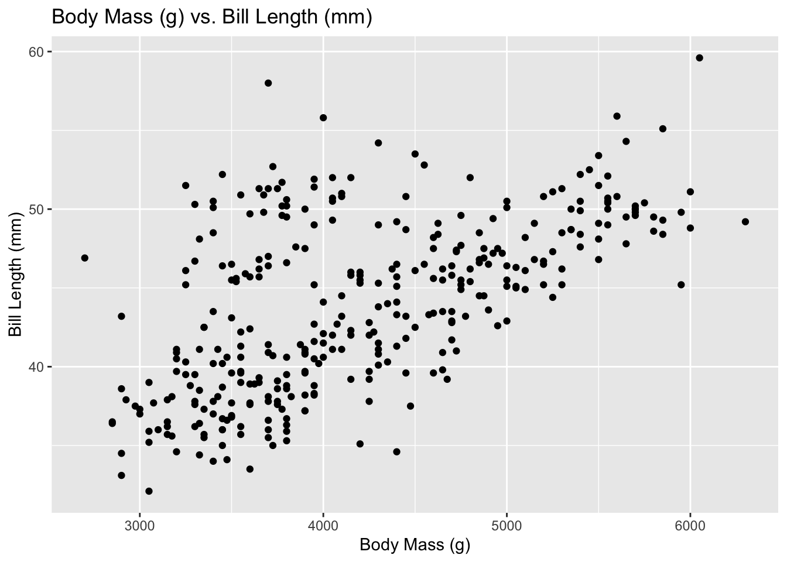
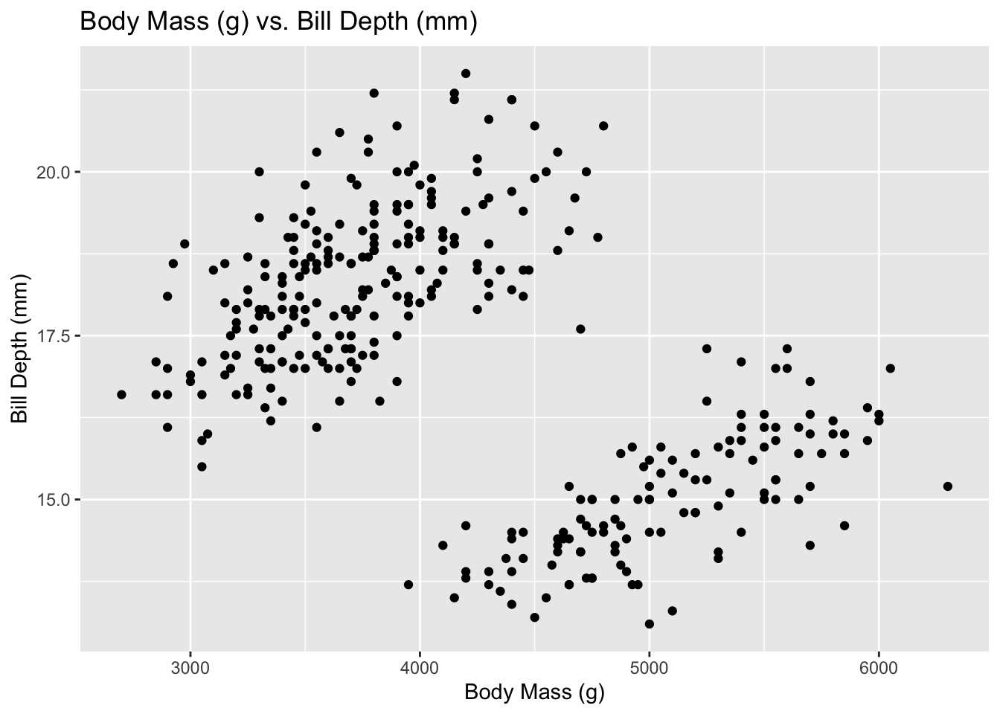

library(tidyverse)Warning: package 'dplyr' was built under R version 4.4.3penguins <- read_csv("data/penguins.csv")This lab accompanies the Week 9 notes, Research Software Engineering and Architecture in R.
map and its typed variants, and to several vectors in parallel with pmap.walk for functions that are called for their side effects.split(), map() and list_rbind(), and check that a refactor does not change the results.possibly() so that one failure does not stop the others.When you have finished the lab, there are more questions in lab_09_practice.qmd, including map2, reduce, pure functions, unit tests and Simpson’s paradox.
The file data/penguins.csv contains the penguins data from the Week 9 notes: body measurements of 344 penguins of three species, recorded on three islands in Antarctica between 2007 and 2009.
library(tidyverse)Warning: package 'dplyr' was built under R version 4.4.3penguins <- read_csv("data/penguins.csv")We start with two short warm-ups.
set.seed(123)
list_of_vectors <- list(
rnorm(20),
rnorm(20, mean = 1),
rnorm(20, mean = -1, sd = 2)
)
numbers <- 1:10
summary_stats <- list(mean, median, sd, var)Solution. Calculate the mean of each vector in list_of_vectors. Each mean is a single number, so map_dbl returns them as a numeric vector; plain map would return a list of three numbers instead.
means <- map_dbl(list_of_vectors, mean)
means[1] 0.1416238 0.9487428 -0.7870295For each statistic in summary_stats, apply the statistic to numbers. Functions can be stored in a list like any other value, so here each element .x of summary_stats is itself a function, and .x(numbers) calls it on numbers:
stats <- map_dbl(summary_stats, ~ .x(numbers))
stats[1] 5.500000 5.500000 3.027650 9.166667Next we use pmap to draw several plots of the penguins at once.
variables <- c("flipper_length_mm", "bill_length_mm", "bill_depth_mm")Solution. Inside the function, v is a string such as "flipper_length_mm", not a column, so aes(y = v) would plot that string as a single constant value. .data[[v]] looks up the column whose name is stored in v.
Building a plot is not a side effect: ggplot() returns a plot object, so pmap collects the three plots into a list, which we store. Drawing them on the screen is a side effect, so we use walk to print each one (printing the list itself would label each plot with [[1]], [[2]] and [[3]]):
display_names <- c("Flipper Length (mm)", "Bill Length (mm)", "Bill Depth (mm)")
titles <- map_chr(display_names, ~ paste0("Body Mass (g) vs. ", .x))
plots <- pmap(list(variables, display_names, titles), function(v, d, t) {
ggplot(penguins, aes(x = body_mass_g, y = .data[[v]])) +
geom_point() +
labs(x = "Body Mass (g)", y = d, title = t)
})
walk(plots, print)


(Each plot warns that it removed 2 rows: two of the penguins have no measurements at all, so there is nothing to plot for them. The #| warning: false option hides these warnings.)
Finally, we replace a loop with map. The code below uses a for loop to fit a separate straight line of bill depth against bill length for each species of penguin, and collects the slopes and intercepts into a tibble. (lm() fits the line, and coef() extracts its intercept and slope.)
species <- unique(penguins$species)
results <- list()
for (sp in species) {
data <- penguins |> filter(species == sp)
# fit a linear regression model of bill depth vs. bill length
model <- lm(bill_depth_mm ~ bill_length_mm, data = data)
# Extract the slope and intercept
slope <- coef(model)["bill_length_mm"]
intercept <- coef(model)["(Intercept)"]
# Store the results
results[[sp]] <- tibble(
species = sp,
slope = slope,
intercept = intercept
)
}
# put into a data frame
loop_results <- bind_rows(results)
loop_results# A tibble: 3 × 3
species slope intercept
<chr> <dbl> <dbl>
1 Adelie 0.179 11.4
2 Gentoo 0.205 5.25
3 Chinstrap 0.222 7.57Solution. The body of the loop becomes a function of one species’ data. It no longer needs to filter the data or store its result in results: it just fits the model and returns a one-row tibble.
fit_bill_model <- function(data) {
model <- lm(bill_depth_mm ~ bill_length_mm, data = data)
tibble(
slope = coef(model)["bill_length_mm"],
intercept = coef(model)["(Intercept)"]
)
}split() does the filtering, giving a named list of three tibbles, one per species. map() applies fit_bill_model to each, giving a list of one-row tibbles with the same names, and list_rbind() stacks them into a single tibble, turning the names into a species column:
by_species <- split(penguins, penguins$species)
list_results <- by_species |>
map(fit_bill_model) |>
list_rbind(names_to = "species")
list_results# A tibble: 3 × 3
species slope intercept
<chr> <dbl> <dbl>
1 Adelie 0.179 11.4
2 Chinstrap 0.222 7.57
3 Gentoo 0.205 5.25There is no results list to set up in advance. The loop also leaves sp, data, model, slope and intercept behind in the global environment, where they could clash with other variables in the analysis; here model is local to fit_bill_model, and the others are not needed at all. (You may see map_dfr() used for this in older code online; map() followed by list_rbind() replaces it.)
Solution. all.equal() compares two objects, allowing for tiny rounding errors in any numbers. It reports mismatches:
all.equal(loop_results, list_results)[1] "Component \"species\": 2 string mismatches"
[2] "Component \"slope\": Mean relative difference: 0.08133538"
[3] "Component \"intercept\": Mean relative difference: 0.3616388"The numbers themselves are the same, but the rows are in a different order. The loop runs through the species in the order in which they first appear in the data, while split() sorts the pieces into alphabetical order. Once both tables are sorted in the same order, they agree:
all.equal(arrange(loop_results, species), list_results)[1] TRUEResearch data often arrive as many files with the same format, such as one file per site or per field season. The folder data/penguins contains the penguins data as one CSV file per species per year.
Solution. list.files() with full.names = TRUE lists the paths of the files in the folder. The folder also contains README.txt, which is not a CSV file, so we use the regular expression "\\.csv$" to keep only the names ending in .csv:
files <- list.files("data/penguins", pattern = "\\.csv$", full.names = TRUE)
files[1] "data/penguins/adelie_2007.csv" "data/penguins/adelie_2008.csv"
[3] "data/penguins/adelie_2009.csv" "data/penguins/chinstrap_2007.csv"
[5] "data/penguins/chinstrap_2008.csv" "data/penguins/chinstrap_2009.csv"
[7] "data/penguins/gentoo_2007.csv" "data/penguins/gentoo_2008.csv"
[9] "data/penguins/gentoo_2009.csv" set_names() names each path after itself, so map() returns a list of tibbles named by file, and list_rbind() turns those names into a file column:
penguins_all <- files |>
set_names() |>
map(read_csv) |>
list_rbind(names_to = "file")
penguins_all |> count(file)# A tibble: 9 × 2
file n
<chr> <int>
1 data/penguins/adelie_2007.csv 50
2 data/penguins/adelie_2008.csv 50
3 data/penguins/adelie_2009.csv 52
4 data/penguins/chinstrap_2007.csv 26
5 data/penguins/chinstrap_2008.csv 18
6 data/penguins/chinstrap_2009.csv 24
7 data/penguins/gentoo_2007.csv 34
8 data/penguins/gentoo_2008.csv 46
9 data/penguins/gentoo_2009.csv 44The files contain 344 penguins in total, the same as the full dataset.
Solution. We split the combined tibble by file, rather than reading every file again:
by_file <- split(penguins_all, penguins_all$file)
file_fits <- by_file |> map(fit_bill_model)Error in `map()`:
ℹ In index: 5.
ℹ With name: data/penguins/chinstrap_2008.csv.
Caused by error in `lm.fit()`:
! 0 (non-NA) casesThe error message says which element of the list caused the error: chinstrap_2008.csv. The error comes from lm(), which reports 0 (non-NA) cases: there are no penguins in this file with both bill measurements, so there is no data to fit a line to. We can confirm this by counting the missing values:
by_file[["data/penguins/chinstrap_2008.csv"]] |>
summarise(
n = n(),
missing_length = sum(is.na(bill_length_mm)),
missing_depth = sum(is.na(bill_depth_mm))
)# A tibble: 1 × 3
n missing_length missing_depth
<int> <int> <int>
1 18 18 18Every one of the 18 penguins in this file is missing both bill measurements: they were not recorded that season. Because map() stops at the first error, we lose the results for all the other files too.
Solution. possibly() turns fit_bill_model into a function that returns NULL, rather than an error, when the fit fails:
fit_or_null <- possibly(fit_bill_model, otherwise = NULL)
file_fits <- by_file |> map(fit_or_null)possibly() fails silently, so we check which files fell back to NULL:
file_fits |> map_lgl(is.null) data/penguins/adelie_2007.csv data/penguins/adelie_2008.csv
FALSE FALSE
data/penguins/adelie_2009.csv data/penguins/chinstrap_2007.csv
FALSE FALSE
data/penguins/chinstrap_2008.csv data/penguins/chinstrap_2009.csv
TRUE FALSE
data/penguins/gentoo_2007.csv data/penguins/gentoo_2008.csv
FALSE FALSE
data/penguins/gentoo_2009.csv
FALSE compact() drops the NULL elements, and list_rbind() combines the rest:
file_fits |>
compact() |>
list_rbind(names_to = "file")# A tibble: 8 × 3
file slope intercept
<chr> <dbl> <dbl>
1 data/penguins/adelie_2007.csv 0.167 12.3
2 data/penguins/adelie_2008.csv 0.161 12.0
3 data/penguins/adelie_2009.csv 0.215 9.71
4 data/penguins/chinstrap_2007.csv 0.152 11.1
5 data/penguins/chinstrap_2009.csv 0.204 8.34
6 data/penguins/gentoo_2007.csv 0.201 5.23
7 data/penguins/gentoo_2008.csv 0.205 5.31
8 data/penguins/gentoo_2009.csv 0.195 5.84A tryCatch() version, as in the notes, works too, and has the advantage that it can print a message naming each file that fails.
Solution. It is reasonable here, because the file genuinely contains no bill measurements, so there is nothing to fit: no amount of code can recover data that were never recorded. But the table of results should not be presented as if it were complete. Anyone reading it should be told that Chinstrap penguins in 2008 are missing, and why, because the Chinstrap results now rest on only two seasons, and Chinstraps already had the fewest penguins of any species (68, against 152 Adelie and 124 Gentoo).
This is the danger of possibly(): it makes the error disappear, so it is up to us to check what was dropped and report it. An error that stops the analysis is a nuisance, but at least it cannot be overlooked.
The error from lm() above, 0 (non-NA) cases, comes from deep inside lm(), and doesn’t say much about what is actually wrong with the data.
Solution.
fit_bill_model <- function(data) {
n_complete <- sum(!is.na(data$bill_length_mm) & !is.na(data$bill_depth_mm))
if (n_complete < 2) {
stop("Need at least 2 penguins with both bill measurements, but found ", n_complete, ".")
}
model <- lm(bill_depth_mm ~ bill_length_mm, data = data)
tibble(
slope = coef(model)[["bill_length_mm"]],
intercept = coef(model)[["(Intercept)"]]
)
}The Chinstrap 2008 file now fails with an error that says what is wrong:
fit_bill_model(by_file[["data/penguins/chinstrap_2008.csv"]])Error in fit_bill_model(by_file[["data/penguins/chinstrap_2008.csv"]]): Need at least 2 penguins with both bill measurements, but found 0.We need two penguins because a straight line needs at least two points. With just one, lm() does not stop with an error: it silently returns a missing slope, which could travel unnoticed through the rest of an analysis. We can see this by fitting the model directly:
one_penguin <- tibble(bill_length_mm = c(40, NA), bill_depth_mm = c(18, 17))
coef(lm(bill_depth_mm ~ bill_length_mm, data = one_penguin)) (Intercept) bill_length_mm
18 NA (The new version also extracts the coefficients with [[, rather than [, which drops their names; Task 5 of the practice sheet shows why this matters.)
Carry on with the questions in lab_09_practice.qmd.